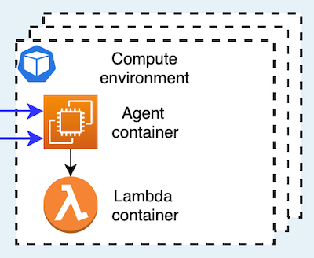

HTC-Grid Architecture¶
This document outlines high level architecture and API of HTC-Grid.
Definitions¶
-
Client Application - A software system that generates job requests and retrieves computation results from the grid system.
-
Task - a unit of work to be scheduled for an execution. A task may have an associated task input and produce an output. The interface of a task takes the same form as the interface of an AWS Lambda handler (Python, Go, Java, C#, etc).
-
Session - a vector of tasks. For example, a job may define a series of scenarios and how they are sub-divided into a set of tasks. Such job can be submitted as a single session containing multiple tasks.
-
Task Input - the set of data which is required in addition to the job definition. Task Input is passed to Engines by reference, bypassing the scheduler itself.
-
The Engine - is a software component responsible for invoking the task execution.
High Level Architecture¶
This section outlines the high level modular architecture of the cloud native HTC-Grid
HTC-Grid has been designed with strong focus on the following tenets: use of cloud native serverless and fully managed services, performance & scalability, availability, cost optimization, and operational simplicity.
The grid system is composed of 4 functional components: 1. HTC-Grid’s API provides entry point for Client Applications to interact with the grid, 2. Data Plane facilitates storage, and I/O operations for submitting jobs’ definitions and retrieving computational results, 3. Control Plane (i.e., scheduler) keeps track of the task's execution, grid’s scaling, and error handling 4. A pool of Computing Resources that perform computational tasks.
Each component has a clearly defined role and operates strictly within that role. Inter module communication is implemented using standardized AWS API which facilitates independent development and provide further customization options.
Internally, each of the 4 functional components (API, Data & Control Planes, and Compute Resources) are built using exclusively cloud native building blocks such as: serverless functions and fully managed services. These blocks require no human maintenance (zero administration), are highly available by design, and can scale horizontally in response to demand.

API: Interacting with HTC-Grid¶
Figure below demonstrates high level steps involved in the task submission and result retrieval.

HTC-Grid allows client applications to submit a session (job) containing a single task, or a vector of tasks. Each submission generates a system-wide unique session_id which is associated with the submission, the session_id is returned to the client application. Successful reception of a session_id indicates that all the tasks of the job are in the system and eventually will be executed.
Client applications can use session_id to inquire the state of the tasks within the session (e.g., pending, running, failed, completed, etc.) and subsequently retrieve results once all the tasks of the session are completed. A session is considered to be completed once all tasks of the session are completed. Additionally, if the session did not complete within specified timeout, the session is considered to be failed.
During a normal usage, client application would either (i) save the returned session object locally and submit more sessions (jobs) (in case of a batch of jobs) or will wait for the completion of the last submitted session. Note, each session can have a list of tasks associated with it. A multi session submission is also possible, in that case a list of session IDs is returned by the connection object.
Control Plane¶
Control Plane performs the role of a job broker responsible for coordinating and scheduling jobs executions in the grid along with scaling Compute Resources in accordance with demand. Control Plane has built in failure detection and recovery mechanism which allows it to retry and report failed jobs.
All building components of the Control Plane are fully managed AWS services (DynamoDB, Simple Queue Service, API Gateway) or serverless functions (i.e., Lambda) which minimizes management and simplifies design.
Failure Detection and Recover¶
Engines acquire tasks by pulling SQS queues, respecting the rank of priority. Once a task has been received by an Engine, the Engine performs an atomic write transaction in DynamoDB to change the status of the task from “pending” to “processing”. At this stage a task is associated with that Engine.
Failure detection in HTC-Grid is implemented via heart beat mechanism. While the task is being processed, the Engine periodically emits heart-beat messages that update the row corresponding to the task in DynamoDB. These periodic updates indicate to the Control Plane that the Engine is alive and still processing the task.
Failure recovery and state reconciliation is implemented using a scheduled Lambda function. This lambda function regularly queries DynamoDB for tasks that are in the processing state but did not receive heart beats from the associated Engines for too long. This indicates that the associated Engines have failed.
Depending on the job definition, failed tasks can be retried up to a fixed number of times (by being re-inserted into the queue) or permanently moved into a ‘failed’ SQS queue for later analysis, following a dead letter queue (https://en.wikipedia.org/wiki/Dead_letter_queue) pattern. All failure events are reported.
When the task is completed, the Engine updates DynamoDB for the last time and sets task status to “completed”. Afterwards, the Engine tries to acquire a next task from an SQS queue.

Data Plane¶
The Data plane is responsible for data distribution across the grid system. Specifically it serves two purposes (i) stores tasks input data associated with jobs definitions (client-to-grid) and (ii) stores results of the computation (grid-to-client).
HTC Grid can use S3 or Redis as back-end for the data plane depending on the requirements. Alternatively, existing interface can easily be extended to support other storage systems.
Compute Resources¶
HTC-Grid utilizes Amazon Elastic Kubernetes Service (Amazon EKS) as a computational back-end. Each engine is a pod containing two containers an Agent and a Lambda. The Lambda container executes lambda locally within the container (there are no calls made to AWS lambda service, the execution is done within the node Lambda container). The agent provides a connectivity layer between the HTC-Grid and the Lambda container. The Agent pulls new tasks from the task queues in the Control Plane, once a new task is acquired the agent invokes the Lambda container and passes the task definition. The Lambda container contains custom executable that perform the work. It is responsibility of the Lambda container to connect to the Data Plane and retrieve associated task payload. Once the task is complete, the results is uploaded to the Data Plane. The Grid Agent updates the task’s state to “completed” and pulls the next task from the Control Plane.

Other Functions¶
-
Clients can be called from Step functions to automate complex application dependencies.
-
Multiple instances of the HTC-Grid can be deployed across multiple on the same account and same region or in multiple regions with the client application running either on AWS or on the cloud.